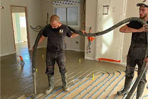
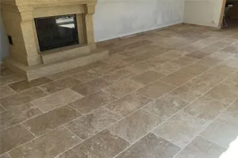
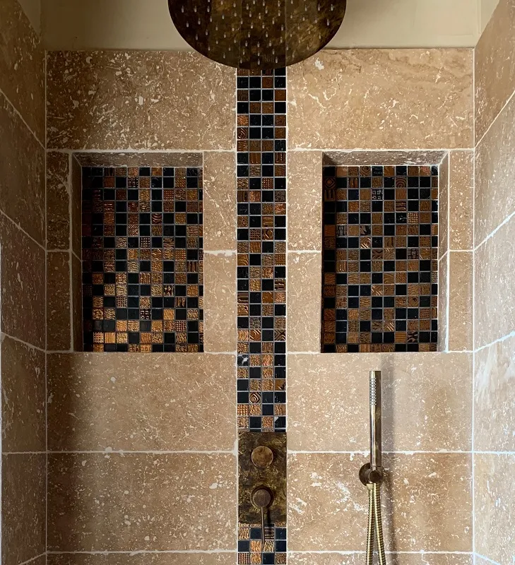
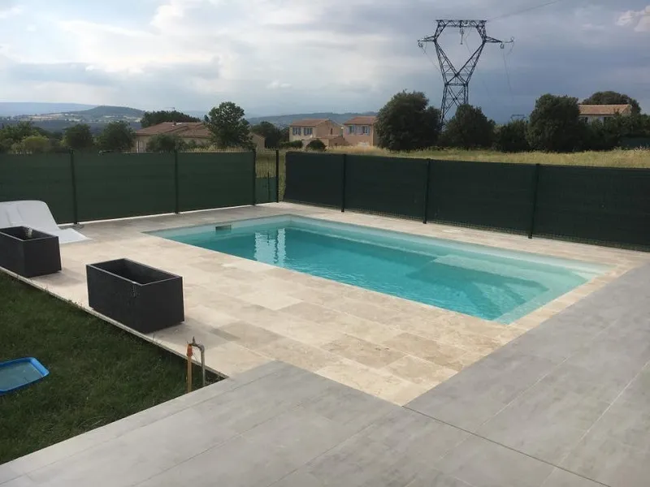
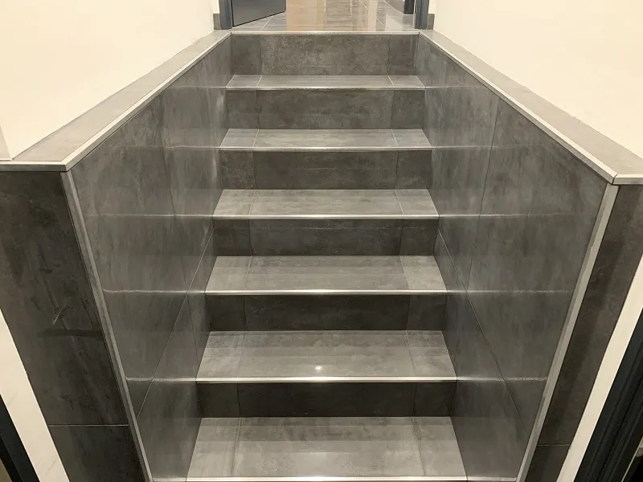
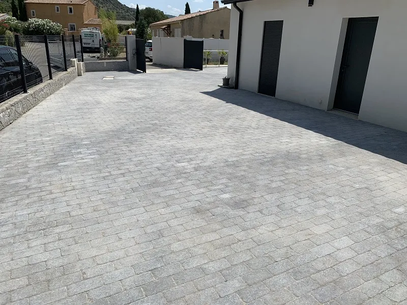
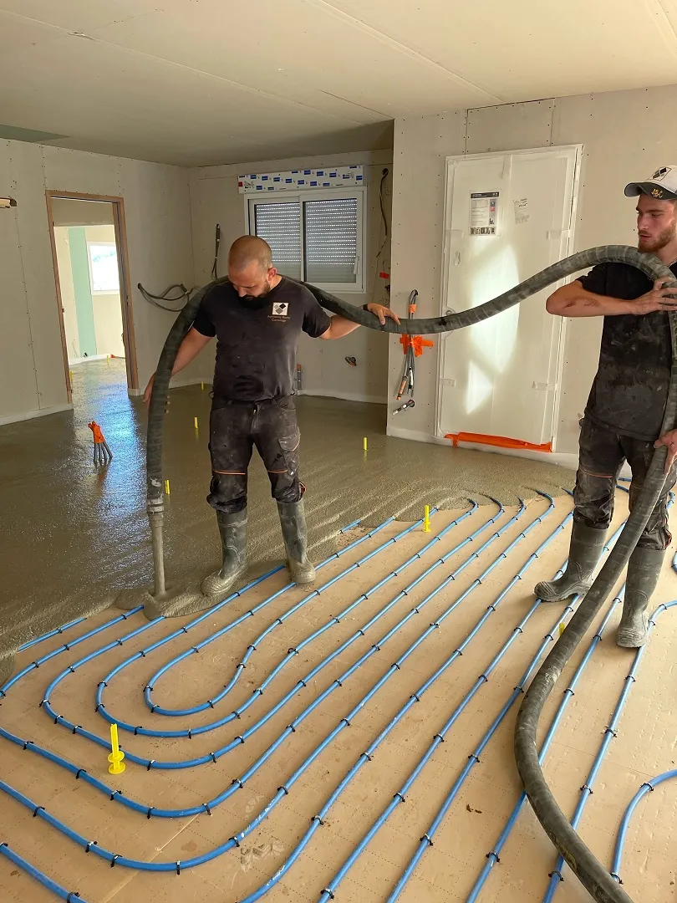

Nos prestations

Chape liquide
Chape fluide base anhydrite ou ciment. À partir de 15 mm d'épaisseur, compatible plancher chauffant. On coule, on nivelle, vous avez un sol parfaitement plan.
En savoir plus →
Carrelage
Pose de carrelage sol et mur : grand format 60x120, mosaïque, pierre naturelle, imitation bois. Du choix des matériaux à la pose, on gère tout.
En savoir plus →Choisissez votre carrelage chez vous
On vient chez vous avec le camion. Plus de 80 échantillons de carrelage et de parquet à voir directement dans votre intérieur, avec la lumière de chez vous. Pas besoin de courir les magasins, le magasin vient à vous.
Vous voyez le rendu réel avant de vous décider. Et on vous conseille sur place : quel format pour votre pièce, quelle couleur de joint, quel type de pose.
Ce que disent nos clients
Avis récoltés sur Google
Super professionnel, les explications sont claires, le devis est rapide et le résultat est parfait. Je recommande les yeux fermés.
Chape et carrelage 60x60 posés dans la maison. Anthony nous a aussi conseillé l'isolation sous la chape. Travail propre et soigné, on recommande.
Travertin sur environ 70 m² plus la salle de bain. Bons conseils, haute qualité de travail. Très satisfaite du résultat.
Des coupes en arrondi d'une grande précision. Travail de qualité, très professionnel. Anthony est vraiment passionné par son métier.
Chape et carrelage opus sur 70 m² plus faïence douche italienne. Chantier impeccable, photos envoyées après chaque journée. Bravo.
Quelques réalisations






Un projet ? Parlons-en.
ABC Chape liquide & Carrelage
Les Quintrands, 2 172 Route de Volx, 04100 Manosque